29 Colour
“I found I could say things with color and shapes that I couldn’t say any other way - things I had no words for.”
29.1 Theory and implementation
Colour is a complex topic. There has been considerable progress made in our understanding of representing colour, even if that has led to a plethora of systems, be it HCL, HLS, HSV, LAB, LUV, RGB, XYZ or whatever. A valuable reference is Zeileis et al. (2020) and the accompanying package colorspace.
software has kept pace, and there are many packages offering colour palettes and ways of creating new ones. There are qualitative palettes for different groups or categories, sequential palettes for different values of the same variable, and diverging palettes for variables with a critical point such as zero between profit and loss. In addition, palettes have been designed to counteract colour blindness. There are packages for generating colour palettes from images, and even a package with palettes inspired by Wes Anderson movies.
Many software defaults are effective and do not need to be changed. Colour defaults generally do need to be changed, as will be apparent from the examples. The illustrations used are smaller versions of graphics occurring elsewhere in the book.
29.2 Perception of colour
How colours are perceived depends on an individual’s eyesight and experience and on the ambient lighting. Human perception varies. In 2015 a photograph of a dress became a big topic online as people disagreed whether it was blue and black or white and gold (“the dress”). Some people are better at discriminating between colours than others. There is some suggestion that women are able to identify more colours than men, seeing different shades where men see a single colour. Some people have strong associations with particular colours. The scene in “The Devil Wears Prada” where Meryl Streep takes Anne Hathaway to task for saying two belts look the same is a good example (and can be found on YouTube as the cerulean scene). A more academic reference is Mohammad (2011).
Colour perception changes depending on surrounding colours and can change over time. Solving a jigsaw puzzle is one example. At first the pieces may be sorted by major colours. Later on, various light blues of the sky may be almost as easily sorted, when these are the only pieces left.
The medium with which colours are viewed is also influential. A display on one computer screen may look different on another, and look different again in print. Ambient conditions, especially lighting, are important. All these factors can have unpredictable effects, yet there is still plenty of good advice to follow.
29.3 Value of colour
Colour can make images more effective, if you know what effect you want to achieve. There are several ways colour works, and colour schemes accentuate (or play down) particular features. There are many aspects to the use of colour and care must be exercised, default palettes may not work well. Sometimes graphics drawn in colour will be reproduced without colour, another factor to have to take into account.
29.3.1 Colours distinguish
The colour scheme in Figure 20.2, repeated here in a smaller form as Figure 29.1, emphasises the four different strokes in swimming. The colours work because there is no overlapping. If there was overlapping, facets with ghostplotting could be used.
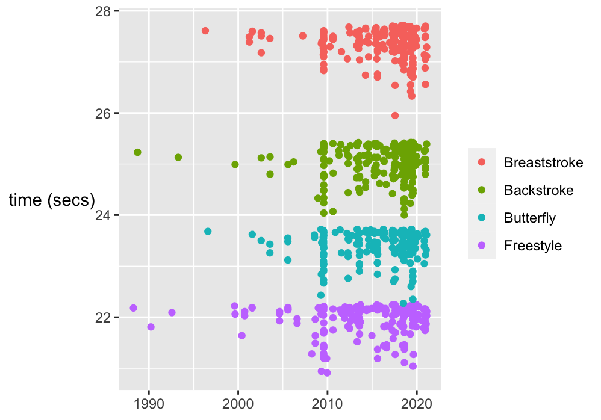
Figure 29.1: Male swimmer best times for four different strokes
In Chapter 5 there are three separate scatterplots using colour, each with different aims, each coloured differently. Figure 29.2 shows them: Stigler’s division of Michelson’s data into five groups (Figure 5.1); Michelson’s grouping the data by three times of day (Figure 5.2); Newcomb’s data including the responsible observers (Figure 5.7). In the first plot the colours show the arbitrariness of the division into groups. In the second plot the morning and afternoon cases are obvious, but the single night-time observation is not (the legend was ordered to help with this). Colour is effective in the third plot, because Holcombe and Newcomb observed on different days. Different colour schemes were used to discourage viewers assuming colours meant the same thing in all plots.
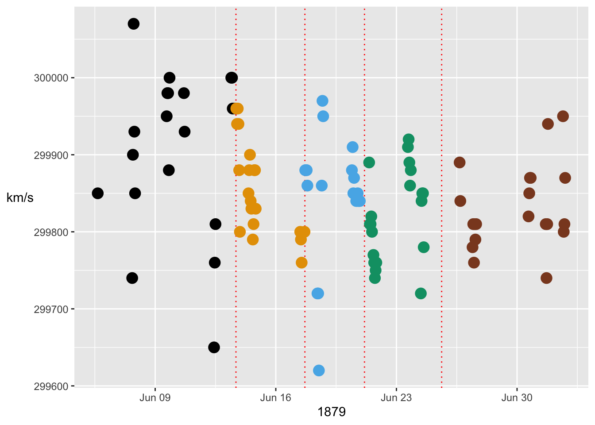
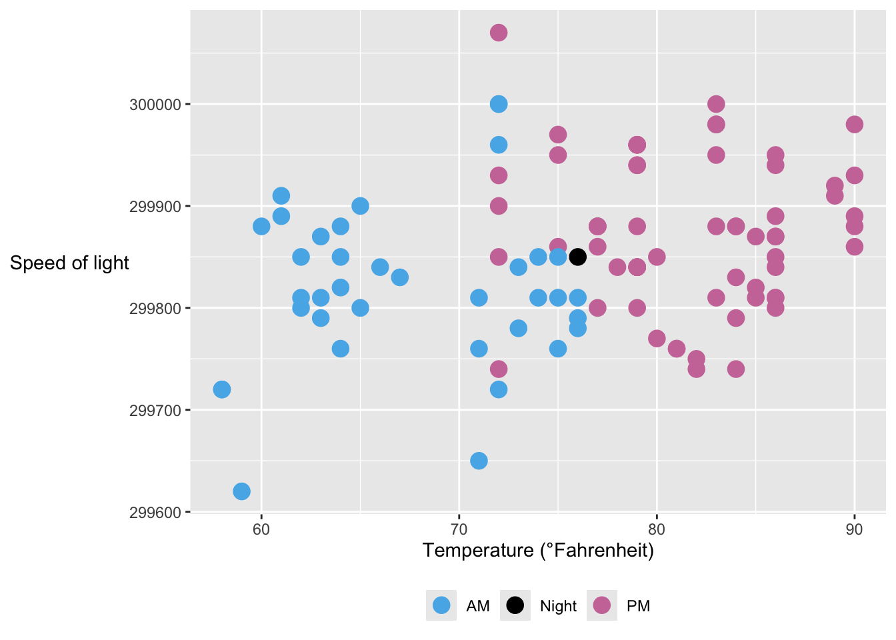
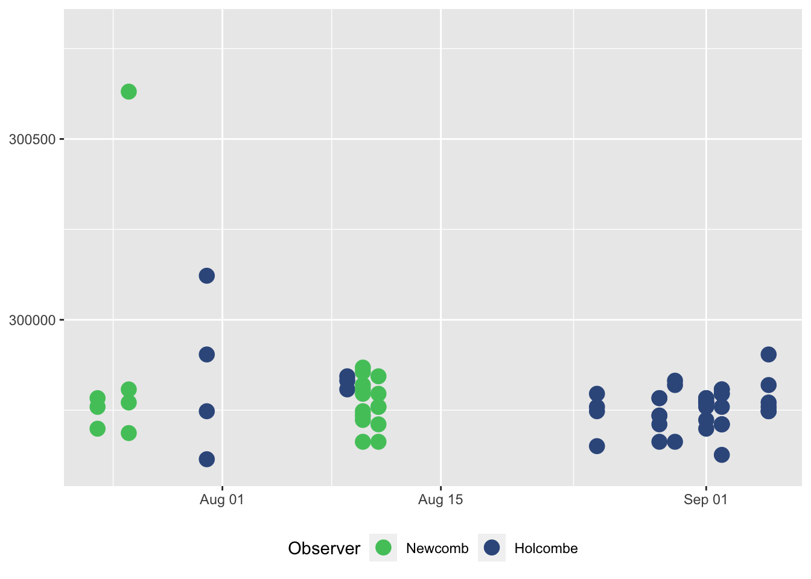
Figure 29.2: Three speed of light plots with three different colour schemes because they represent three different situations
29.3.2 Colours highlight
Colouring individual outlying points draws more attention to them, whether they are boxplot outliers or unusual values in scatterplots. The boxplot of Newcomb’s measurements of the speed of light in §5.2 is one example of highlighting outliers (Figure 5.4).
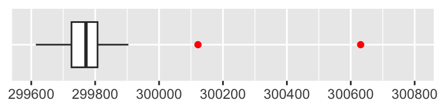
Figure 29.3: Speed of light measurements by Newcomb
The boxplots of chess players’ ratings by age in §8.4 is another example, (Figure 8.19 repeated as Figure 29.4).
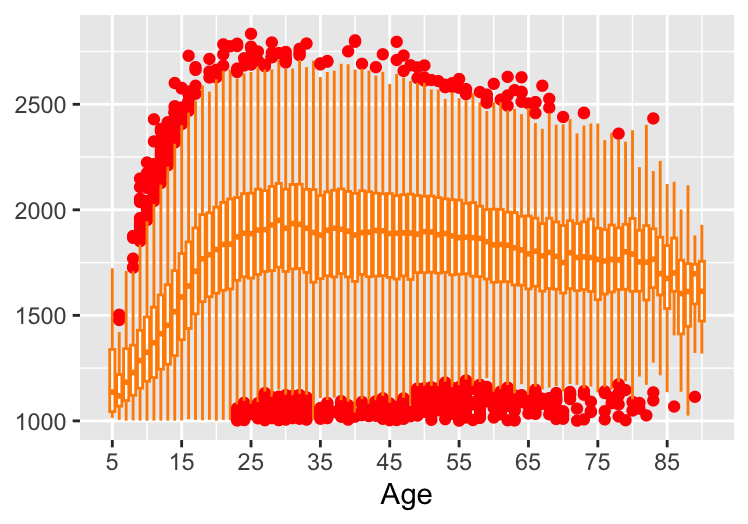
Figure 29.4: Boxplots of ratings for each age for active chess players in 2015
The scatterplot of chess ratings by age in Figure 8.17, repeated as Figure 29.5, uses red to pick out the players with the highest ratings and alpha transparency to downplay the others.
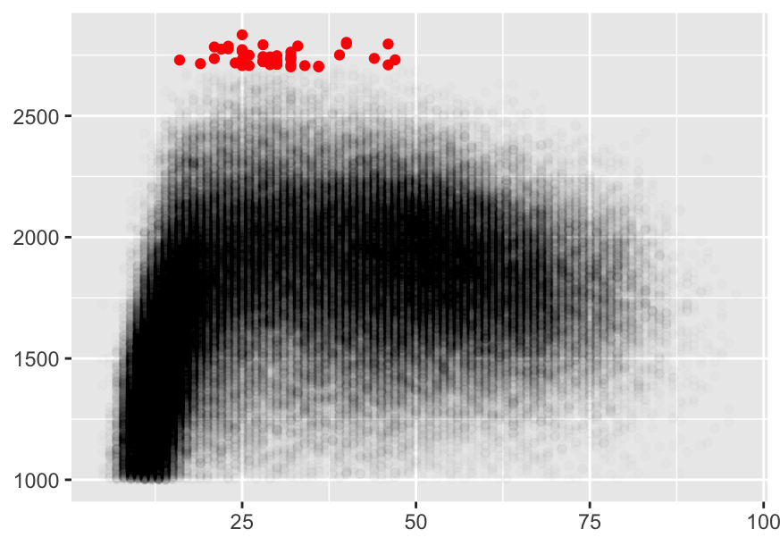
Figure 29.5: Rating by age for active players in 2015. Players with ratings over 2700 have been coloured red. An alpha value of 0.01 has been used for the other players.
In Figure 16.4 colour is used to pick out English football teams with extreme proportions of points won at home in their leagues. Those 10 points are also drawn slightly bigger than the other 9545 points.
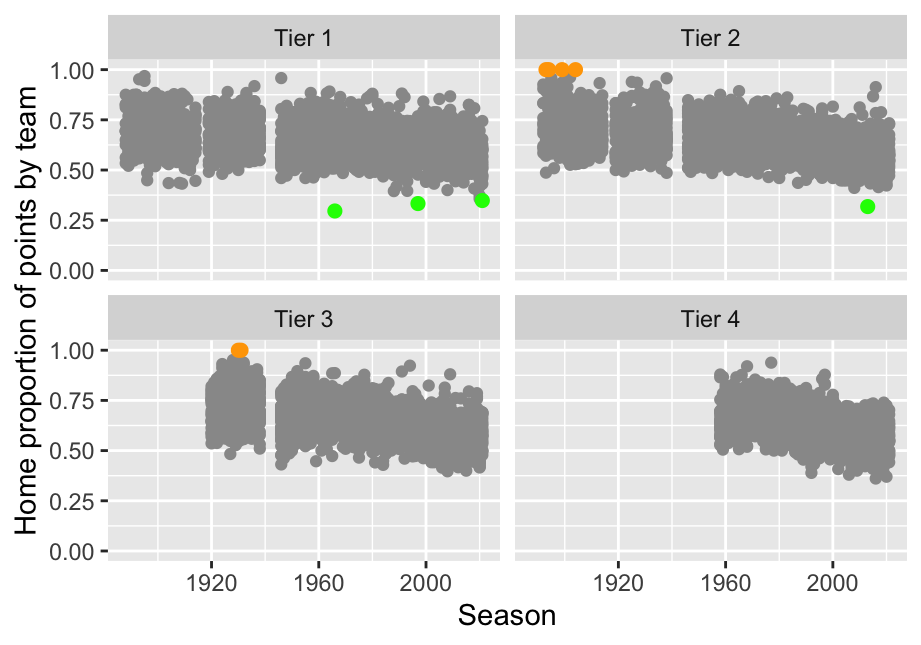
Figure 29.6: Individual home away points ratios for every English football team for every season
Highlighting some aspects can be achieved by playing down others. Some faceted plots have been drawn in the book with the complete dataset in the background of each facet drawn in a discreet grey rather than a default black, ghostplotting, to give context. Examples include Figures 10.7, 14.5, and 18.10.
29.3.3 Colours connect
Using the same colours consistently for the same dataset underscores connections. If there are several displays involving the same data, then colouring by a grouping should be the same for all. In §14.1 five species of Darwin’s finches are displayed in a barchart, two boxplots, a scatterplot, and a parallel coordinate plot. The first four plots are redrawn in miniature here (Figure 29.7).
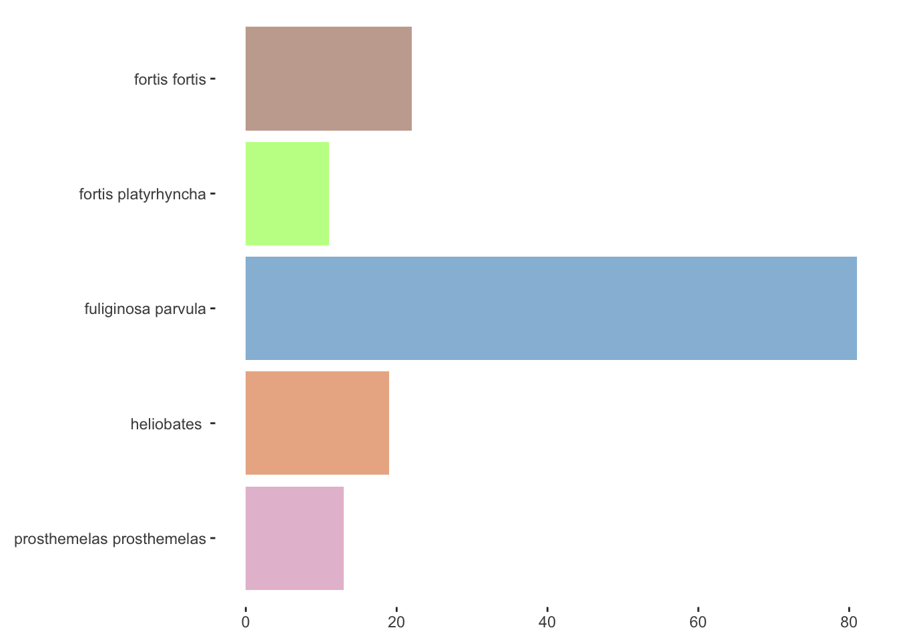
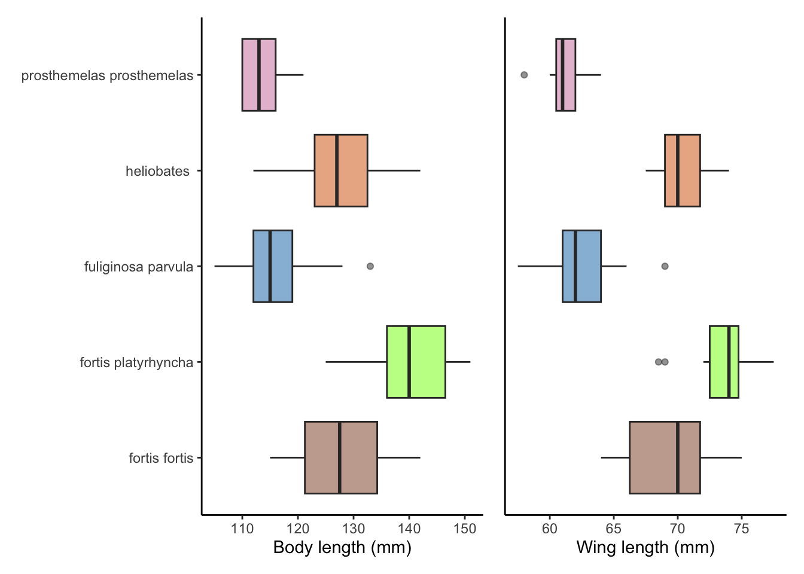
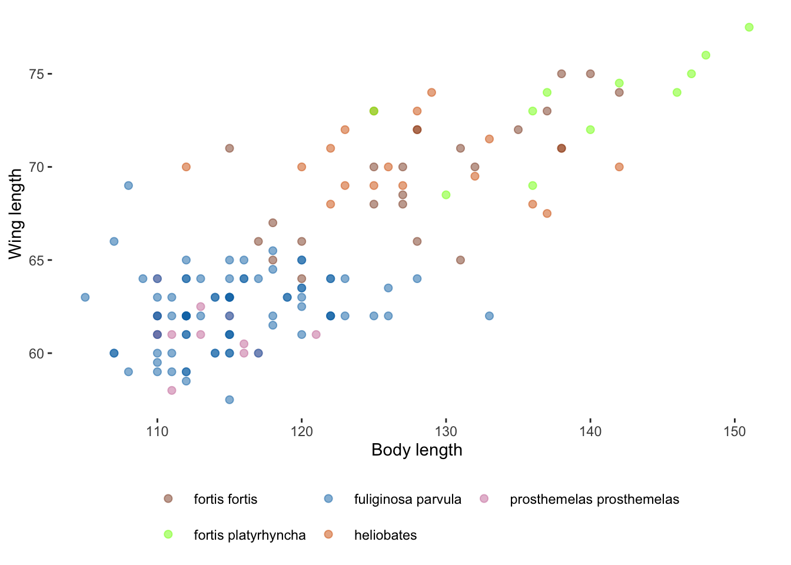
Figure 29.7: Plots of five species of Darwin’s finches
Consistent use of colours in the same circumstances can be useful too. Throughout the book there are many datasets grouped by sex: Olympic sports, chess players, survey respondents, spaceflights, marathon runners, Titanic passengers. A purple colour has been used for females and a green for males.
29.3.4 Colours separate
Different groupings should use different colours. In §18.1 three plot ensembles have the same form, but with different subgroups selected, so different colours are employed (Figures 18.2, 18.3, and 18.4).


Figure 29.8: Plot ensembles for different groups of Penguins (using different colours for the selections)
With interactive graphics the same highlighting colour is always used for selected cases, because selection is temporary. The chosen colour defines the current interactive selection. Colours that separate are needed for static presentation graphics.
29.3.5 Colours signify
Colours should match known associations. If certain colours are associated with political parties, countries or international football teams, then consider using those colours in statistical displays.
In Chapter 26 the German political parties have been represented by their own colours, as in Figure 26.16, shown here as Figure 29.9.

Figure 29.9: Winners of seats by political party in Germany
Whether this is effective or not may depend on the type of plot. The Gapminder dataset discussed in Chapter 2 splits the world into four regions and colours those regions consistently. Using that colour scheme for the time series in Figure 2.5 is not effective, although it is fine for the associated faceted plot and barcharts.
This may not always work as expected. In the 2022 FA Cup Final at Wembley, Chelsea played in yellow against Liverpool instead of their normal blue, possibly because they had lost the 2022 Carabao Cup Final against the same opponents wearing blue earlier in the year. It was striking to see their fans wearing blue when the team were wearing yellow (and did not need to). Chelsea lost again.
Different countries have different associations with different colours, as can be seen in the Colours in Culture poster that looks at colour associations for 84 concepts in 10 populations around the world (McCandless (2022)). It is too difficult to cope with all possible associations in an international context, but it is worth bearing in mind. There are many stories and traditions linked to colours, as is entertainingly described in St Clair (2016). Amongst other thought-provoking comments, she points out that the colours pink for a girl and blue for a boy are a mid twentieth-century development. Formerly, it was common to associate pink with boys and blue with girls.
29.3.6 Colours attract
Well chosen colours can turn a mundane, grey graphic into an attractive and pleasing picture that is a pleasure to work with. Studying a succession of similar, dry graphics can be disheartening and discouraging. A restrained use of colour is an advantage. Not all plots of the same type have to look the same. As Bertin writes of colour (Bertin (2010) Chapter II.C.2): “It captures and holds attention, multiplies the number of readers, assures better retention of the information, and, in short, increases the scope of the message.”
29.4 Choice of colour
There is a huge range of colours and colour palettes to chose from, and plenty of advice on which to use. That does not make choosing any easier. Similarly, there is a great deal of advice on fashion and on what to wear, but not everyone is well dressed.
29.4.1 Colour blind palettes help
Colour blind people are more the exception than the rule, but that is no excuse for ignoring their needs, particularly as graphics are being increasingly used. Various sources offer colour palettes that are readable for the colour blind and using these or subsets of them is worthwhile. Free software is available that enables designers to check how their graphics would look to viewers with different kinds of colour blindness.
The same colour blind palette has been used in several figures in the book for datasets as diverse as a gay rights survey, electric car charging, penguin species, swimmers’ nationalities, and groups of marathon runners. Three examples, Figures 9.11, 18.8, and 21.2, are shown together in Figure 29.10.
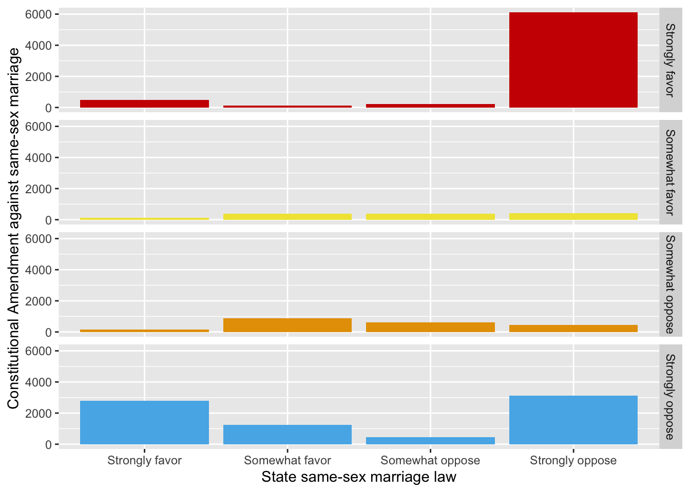

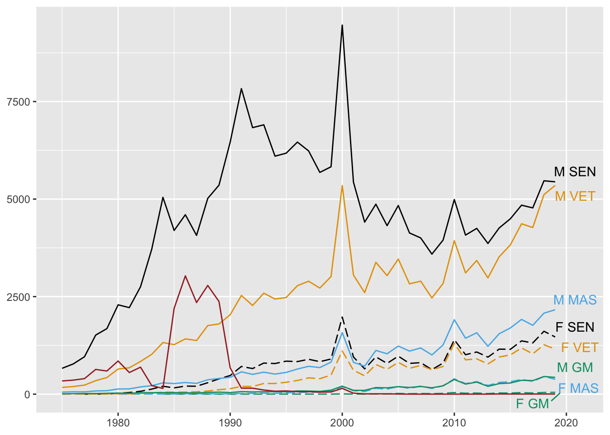
Figure 29.10: Three uses of a colour blind palette
29.4.2 Palette order counts
In §10.1 spaceflights are coloured by the space station program they joined, if any (Figure 10.5, redrawn as Figure 29.11). The default ordering of the colour blind palette from the package ggthemes was changed to make the Skylab station that was only used briefly in 1973-4 more visible and to keep similar colours apart.
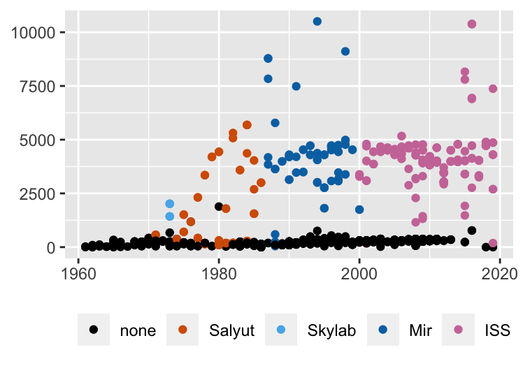
Figure 29.11: Spaceflight mission times coloured by space station programme
29.4.3 There may not be enough colours
Sometimes there are too many groups. Gapminder countries, football shirts of teams playing at Euro2020, nationalities of passengers on the Titanic are all too numerous to be assigned different, distinguishable colours.
Sometimes there are too many different groupings. In Chapter 2 colours are used for three Scandinavian countries, for four world regions, and for the six most populous countries. In Chapter 10 colours are used for sex, space station programmes, and nationalities.
29.4.4 Avoid using the same colours for different datasets
Colour schemes stand out. If the same palettes are used for different examples, readers may mistakenly assume they are looking at the same dataset. Figure 29.2 shows an example.
29.4.5 Avoid overlapping colours, use faceting
A display with several groups or time series may be hard to disentangle and decode. An alternative is to plot each subset individually in its own facet, together with the rest of the data underneath in a light grey (ghostplotting). At the end of §14.1 there is a faceted parallel coordinate plot, Figure 14.5, redrawn here as Figure 29.12. If it was drawn as a single plot with all 9 species, it would be much more difficult to read.
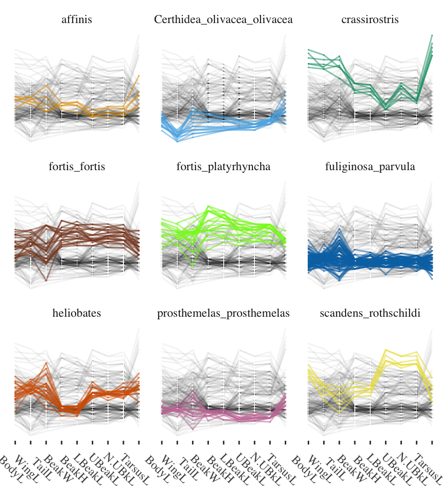
Figure 29.12: Nine measurements of 9 species on Isabela Island
29.4.6 Backgrounds matter
Finally, take the colour scheme of background and surroundings into account. Individual media outlets usually have a house style, as do firms and organisations. A particular display may be perceived quite differently, if presented otherwise unchanged.
In this book the default ggplot2 background has often be used. This does not work well for maps, mosaicplots, and parallel coordinate plots, where scales and gridlines are not appropriate. Figures 7.1, 25.8, and 14.4 have been drawn with plain backgrounds. Other plots might benefit from a change of background too.

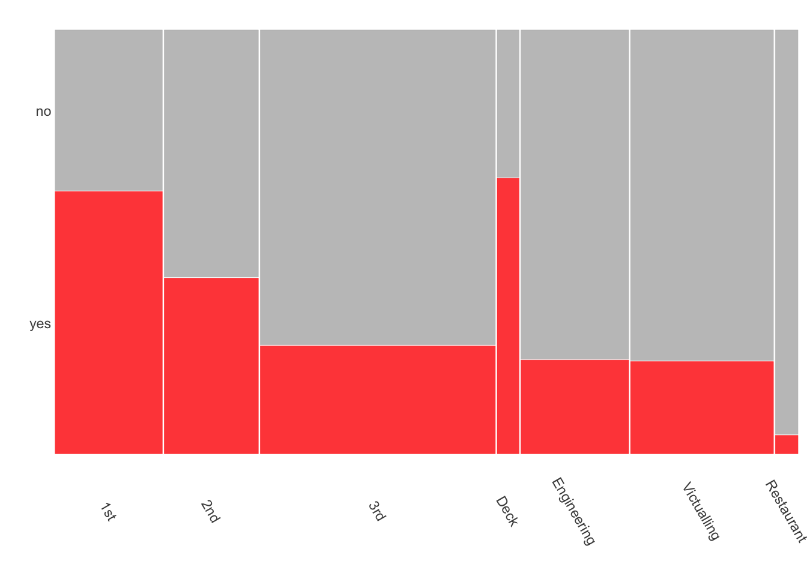
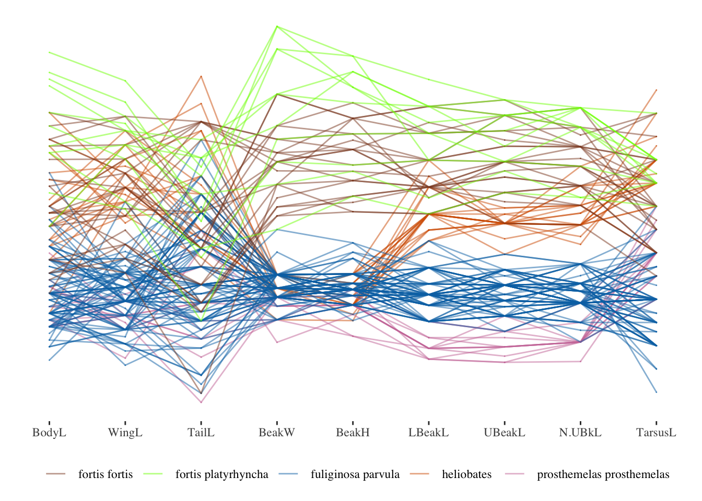
Figure 29.13: Graphics drawn with plain backgrounds
At art exhibitions in the past the walls were covered with paintings. There are etchings showing this by Pietro Antonio Martini of the French Academy’s Salon exhibitions of 1785 and 1787 at the Louvre and of the English Royal Academy’s exhibition of 1788. Reproductions can be found on the web. In the nineteenth century. Manet thought about how his pictures might stand out in such collections, if they were accepted by the annual Salon. Drawers of graphics should think about the likely surroundings of their plots too.